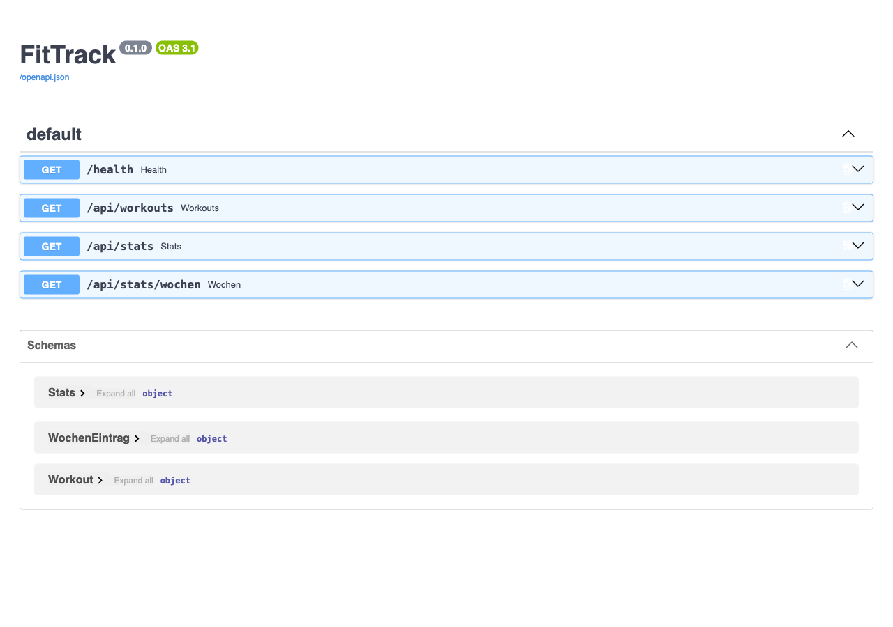

Die Story
US-3 · Health. Als Entwickler möchte ich einen Health-Endpunkt, damit ich später im Container prüfen kann, ob die App läuft. Akzeptanz: GET /health liefert {"status": "ok"}.
Der Endpunkt sieht überflüssig aus und ist es nicht. Der Container fragt ihn, Render fragt ihn vor jedem
Weiterleiten von Verkehr, und im Kurs ist er der Ort, an dem die Gruppe die Methode lernt, ohne über Fachlogik
nachdenken zu müssen.
Die Schleife
Der Ablauf ist bewusst nicht agentisch: Das Modell schlägt vor, übernommen wird von Hand. Die Prüfstelle zwischen
Vorschlag und Editor ist der Ort, an dem aus Textproduktion Entwicklung wird.
flowchart TD
A["User Story mit Akzeptanzkriterium
(Product Owner)"] --> B["Test schreiben, pytest: ROT
(Quality)"]
B --> C["Prompt im Chat
(Developer)"]
C --> D["Antwort lesen und prüfen
Review-Checkliste"]
D --> E["Code in WebStorm übernehmen"]
E --> F{"pytest"}
F -- "rot" --> G["Fehlermeldung wörtlich
zurück in den Chat"]
G --> C
F -- "grün" --> H["Demo am Gerät,
PO nimmt ab"]
H --> I["Commit mit Story-Bezug, Push"]
Die Schleife hat genau eine Rückführung: Schlägt der Test nach der Übernahme fehl, geht die Fehlermeldung wörtlich zurück in den Chat, nicht sinngemäß.
So testen Sie konkret
Ein Test ist eine kleine Python-Funktion, die die App aufruft und das Ergebnis mit einem Wert vergleicht, den
Sie vorher selbst kennen. Ausgeführt wird sie mit einem Befehl im Terminal, nie im Chat. Der Chat bekommt den
Test nur als Text mitgeliefert. Am Beispiel der Kennzahl „Gesamtkilometer“ aus Lab 03, weil dort ein echter
Rechenwert geprüft wird:
1. Erwartungswert von Hand rechnen
Die Testdaten sind acht Einheiten in backend/tests/fixtures/workouts_klein.sql. Kilometer
addieren: 5,0 + 20,0 + 8,0 + 1,5 + 30,0 + 9,0 + 10,0 + 4,0 = 87,5. Das ist die Zahl, die die
App liefern muss. Sie wird selbst gerechnet, nicht vom Chat erfragt.
2. Den Test in die Datei schreiben
In WebStorm backend/tests/test_api.py öffnen und ergänzen:
def test_stats_gesamt_km():
stats = client.get("/api/stats").json()
assert stats["gesamt_km"] == 87.5
Zeile 1 benennt den Test; der Name muss mit test_ beginnen, sonst findet pytest ihn nicht. Zeile 2
ruft die App auf wie ein Browser. Zeile 3 behauptet: Das Feld gesamt_km ist 87,5. Stimmt das
nicht, schlägt der Test fehl.
3. Tests laufen lassen
Im Terminal von WebStorm, im Projektordner:
pytest
pytest sucht alle Funktionen, die mit test_ beginnen, führt sie aus und meldet je Test PASSED oder
FAILED. Im Terminal erscheint FAILED rot und PASSED grün; deshalb heißt es im Kurs kurz „der Test ist rot“ für
fehlgeschlagen und „grün“ für bestanden. Solange der Endpunkt noch fehlt, sieht das so aus:
FAILED backend/tests/test_api.py::test_stats_gesamt_km - ... 404
1 failed in 0.16s
Das Fehlschlagen ist hier richtig
Es beweist, dass der Test etwas prüft, was noch fehlt. Ein Test, der von Anfang an grün ist, hat nichts
belegt.
4. Prompt in den Chat
Der Chat führt nichts aus und sieht Ihr Repository nicht. Deshalb steht der Test wörtlich im Prompt, als
Auftrag: „Der Code muss diesen Test bestehen: …“. Die Antwort lesen, die Prüfpunkte abhaken, den Code in die
Zieldateien übernehmen.
5. Wieder pytest
Entweder grün:
15 passed in 0.16s
oder rot mit genauer Angabe. Ein Lauf mit falschem Ergebnis sieht so aus:
> assert stats["gesamt_km"] == 87.5
E assert 90.0 == 87.5
backend/tests/test_api.py:52: AssertionError
Die Zeile mit E sagt: Die App liefert 90,0, der Test erwartete 87,5. Genau diesen Block wörtlich in
den Chat zurück („Der Test schlägt so fehl: …“), korrigierten Code übernehmen, wieder pytest. Bis
grün.
6. Committen
Erst wenn pytest grün ist: Git → Commit in WebStorm, Nachricht mit Story-Bezug, Push.
Ab Lab 07 wiederholt GitHub Actions denselben Lauf bei jedem Push auf einem frischen Rechner.
Was dahinter passiert
conftest.py baut vor jedem Lauf aus schema.sql und dem Fixture eine temporäre
Testdatenbank und setzt FITTRACK_DATA darauf. Die Tests laufen nie gegen die 311 Echtdaten.
TestClient ruft die App im selben Prozess auf, ein Server wird nicht gestartet; deshalb dauern
alle 15 Tests unter einer Sekunde. Für den Sonderfall „keine Daten“ tauscht monkeypatch die
Ladefunktion vorübergehend gegen eine leere Liste aus.
Zwei Regeln
Der Erwartungswert kommt nie vom Modell, sonst prüft der Test nur, ob die KI mit sich selbst übereinstimmt.
Und der Test wird nie geändert, damit er zum Code passt; der Code muss sich dem Test anpassen. Einzige
Ausnahme: Eine Story erweitert bewusst die Spezifikation, wie US-7 in Lab 10. Dann ändert sich der Test vor
dem Code, mit Begründung im Commit.
Test zuerst
Der Test liegt schon im Starter. Lesen Sie ihn, bevor Sie prompten: Er ist die Spezifikation, gegen die später
geprüft wird.
from fastapi.testclient import TestClient
from app.main import app
client = TestClient(app)
# US-3: Health-Endpunkt
def test_health():
antwort = client.get("/health")
assert antwort.status_code == 200
assert antwort.json() == {"status": "ok"}
Was der rote Lauf beweist
Ein Test, der von Beginn an grün ist, hat nichts belegt. Der rote Lauf zeigt, dass der Test überhaupt greift.
Im Starter scheitert er schon am Import: ModuleNotFoundError: No module named 'app.main'.
Der Prompt
Der Chat sieht das Repository nicht. Deshalb steht alles Nötige im Prompt: Rolle, Kontext, Aufgabe,
Randbedingungen und der Test, der bestehen muss. Die Aufforderung zur Erklärung sorgt dafür, dass die Antwort
gelesen wird.
Du bist ein erfahrener Python-Entwickler. Wir bauen mit FastAPI eine kleine
Fitness-App namens FitTrack. Projektstruktur:
FitTrack/
├── backend/app/main.py <- diese Datei gibt es noch nicht
├── backend/tests/test_api.py
└── requirements.txt (fastapi, uvicorn, pytest, httpx2)
Aufgabe: Erstelle backend/app/main.py mit einer FastAPI-App und dem
Endpunkt GET /health, der {"status": "ok"} zurückgibt.
Randbedingungen:
- Nur FastAPI, keine weiteren Pakete
- Kommentare und Docstrings auf Deutsch, kurz
- Die App wird so gestartet:
uvicorn backend.app.main:app --reload --host 0.0.0.0 --port 8000
- Dieser Test muss bestehen:
from fastapi.testclient import TestClient
from app.main import app
client = TestClient(app)
def test_health():
antwort = client.get("/health")
assert antwort.status_code == 200
assert antwort.json() == {"status": "ok"}
Gib nur die Datei main.py aus und erkläre in drei Sätzen deine Entscheidungen.
Prüfpunkte für die Antwort
- Genau eine Datei? Hat das Modell etwas Ungefragtes ergänzt, etwa Middleware, CORS oder Logging? Weglassen.
- Steht
app = FastAPI(...) auf Modulebene? Der Test importiert app aus app.main.
- Existiert jeder Import? Halluzinierte Pakete sind der häufigste Fehler generierten Codes.
- Können Sie jede Zeile erklären? Wenn nicht, nachfragen, bevor Sie übernehmen.
So sieht die Referenzlösung aus. Ihre Antwort aus dem Chat darf anders aussehen, solange sie die Prüfpunkte und
den Test besteht.
"""FitTrack – FastAPI-Anwendung.
Start lokal (aus dem Projektordner FitTrack/):
uvicorn backend.app.main:app --reload --host 0.0.0.0 --port 8000
"""
from fastapi import FastAPI
app = FastAPI(title="FitTrack", version="0.1.0")
@app.get("/health")
def health() -> dict:
"""Antwortet mit ok, wenn die App läuft. Wird später vom Container genutzt."""
return {"status": "ok"}
Was technisch passiert
Drei Dinge greifen ineinander, und jedes davon taucht in den nächsten Labs wieder auf.
FastAPI
Ein Dekorator @app.get("/health") verbindet einen Pfad mit einer Funktion. Der Rückgabewert wird
automatisch zu JSON. Aus denselben Dekoratoren erzeugt FastAPI die Dokumentation unter /docs.
uvicorn
Der Server, der die App ausführt. --reload startet bei jeder Dateiänderung neu,
--host 0.0.0.0 macht sie im WLAN erreichbar, später im Container unverzichtbar.
TestClient
Der Test startet keinen Server. Der TestClient ruft die App direkt im Prozess auf. Deshalb laufen alle
Tests in unter einer Sekunde.

Die Dokumentation unter /docs entsteht aus dem Code. Nach Lab 04 stehen hier vier Endpunkte und drei Schemas.
Test bestanden, Demo, Commit
Demo für den Product Owner: localhost:8000/health
im Browser, dazu /docs. Dann der Commit. Die Nachricht trägt die Story, damit die Historie später
zeigt, welcher Commit welche Anforderung erfüllt.
In WebStorm ohne Terminal
Rechtsklick auf test_api.py → Run 'pytest in test_api.py'. Commit über Git → Commit (⌘K), geänderte
Dateien anhaken, Nachricht eintragen, Commit and Push.
Übungen
Drei Übungen: eine zur Reihenfolge, eine zu den Rollen in der Schleife, eine an der Konsole.
Zusammenfassung
- Der Test steht vor dem Prompt. Der rote Lauf beweist, dass er greift.
- Der Prompt trägt Rolle, Kontext, Aufgabe, Randbedingungen und den Test. Der Chat sieht das Repository nicht.
- Die Antwort wird gelesen und geprüft, bevor sie in WebStorm landet. Ungefragte Ergänzungen werden weggelassen.
- Schlägt der Test danach fehl, geht der Traceback wörtlich zurück in den Chat.
- Test bestanden, Demo unter
/health, Commit mit feat(US-3). Damit ist die Story nach Definition of Done fertig.